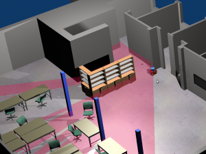

We are pleased to demo our prototype of helper Robot in a shopping mall in Lille during the NSE4 event. The demo consists in guiding visitors to help them to pick products one as shown in previous videos of the RoboShop on this blog. Feel free to come and discuss with us, we are there until October, 24th.
Frontier-based exploration based on ROS and MORSE
Firstly, assuming you have already installed ROS Groovy and MORSE 1.x.x.
Then you need two additional packages p2os and exploration:
git clone https://github.com/allenh1/p2os.git
svn co https://svn.code.sf.net/p/bosch-ros-pkg/code/trunk/stacks/exploration
Finally, download the attachment (yz_morse_sim), decompress it and enter into the folder morse_sim.
Now, let’s start the simulation!
1. Launch roscore in a terminal window:
roscore
2. Launch MORSE simulator in a new terminal window:
morse run single_robot.py
3. Launch ROS nodes in a new terminal window (This step will also launch gmapping and rivz):
roslaunch single_robot.launch
4. Save the map if you want, in a new terminal window:
rosrun map_server map_saver
Done!

{kind=link}
Frontier-based exploration based on ROS and Stage
Firstly, assuming you have already installed ROS Groovy and Stage 3.x.x.
Then you need two additional packages p2os and exploration:
git clone https://github.com/allenh1/p2os.git
svn co https://svn.code.sf.net/p/bosch-ros-pkg/code/trunk/stacks/exploration
Finally, download the attachment (yz_stage_sim), decompress it and enter into the folder stage_sim.
Now, let’s start the simulation!
1. Launch roscore in a terminal window:
roscore
2. So, you have three options to implement the exploration: teleoperation, exploration and exploration with SLAM, in a new terminal window:
roslaunch teleop.launch (or explore.launch, or explore_slam.launch)
3. You can track the exploration progress by using rviz, in a new terminal window:
rosrun rviz rviz -d stage.rviz
4. If you want build a map by teleoperation, in a new terminal window:
rosrun gmapping slam_gmapping scan:=base_scan
5. Save the map, in a new terminal window:
rosrun map_server map_saver
Done!

Parametrized Tests
Being a TDD fan, I’m writing tests all the time. And I sometimes ended up having groups of nearly identical tests:
- they use exactly the same objects, send the same messages,
- but they differ only by values.
In a discussion on the Pharo-dev mailing list, Laurent Laffont pointed what is done in PhpUnit and suggested to have something similar in Pharo. After a few hours hacking I’ve my parametrized tests working and integrated with the test runner to ease debugging.
I’ve introduced a ParameterizedTestCase which supports both “plain” tests as well as parametrized tests. This class should be subclassed as in the following example:
ParameterizedTestCase subclass: #ExampleOfParameterizedTestCase
instanceVariableNames: ”
classVariableNames: ”
poolDictionaries: ”
category: ‘ParameterizedTests’
A test method is any method that is marked with the pragma testParametersSelector: as in the following example:
ExampleOfParameterizedTestCase>>#should: value1 plus: value2 equals: expectedSum
<testParametersSelector: #givenValuesAndTheirExpectSum>
self assert: value1 + value2 equals: expectedSum
The argument of the pragma testParametersSelector: is the selector of a method that provides a collection of arrays. Each array gathers parameters for a different test case. In our example the method givenValuesAndTheirExpectSum is defined as following:
ExampleOfParameterizedTestCase>>#givenValuesAndTheirExpectSum
^{{1. 2. 3}.
{10. 20. 30}.
{100. 200. 300}}
Since we have three arrays of parameters, we will have 3 different test cases all three with the same test selector, but each with a different parameters array. This is displayed by the test runner as shown in picture 1.

Picture 1: Passing Parametrized Test
If any of the parameters arrays leads to a test failure, the Test Runner will display the failing test selector as well as the parameters that lead to the defect. For demo purpose, let’s introduce some invalid parameters and change the previous givenValuesAndTheirExpectSum method as following:
ExampleOfParameterizedTestCase>>#givenValuesAndTheirExpectSum
^{{1. 2. 3}.
{10. 2. 30}.
{100. 200. 0}}
I have changed the second and the third parameter arrays. The Test Runner detects indeed 2 failing tests out of 3 runs as shown in picture 2. As you can see the parameters that lead to the defect are displayed so, one can identify the origin of the defect.

Picture 2: Failing Parametrized Test
I have developed and tested parametrized tests under Pharo 2.0. If you want to try it, you can install it by evaluating the following expression in a workspace.
Gofer it
url: ‘http://car.mines-douai.fr/squeaksource/BoTest’;
package: ‘ParameterizedTests’;
load.
It is worth noting that although in the examples I have given above data is hard coded, nothing prevent from adopting an approach as suggested by Frank Shearar in his Squeak Check project. Method that return the array of parameters can rely on any arbitrary complex data generator class, that may produce different data randomly each time tests are run.
Zhi YAN presentation
Zhi YAN (Web Page) is a new postdoc in our team since september, 15th 2013. He will work 12 months on our CAIRE project. Today, Zhi presented us some of its work during its PhD.
Presentation title: Tasks and motion planning for multi-robot systems
Summary: This presentation focuses on the issue of multi-robot coordination from the standpoint of planning, which contains task planning and motion planning.
Two new approaches are proposed for the task planning. The first one is a decentralized approach based on trading rules. This approach is designed to simulate the relationship between buyers and sellers in a business system, to achieve dynamic task allocation by using a mechanism of unsolicited bid. The second approach is an heuristic one which is based on an empirical model. It is designed to assign the transportation task to individual robots by estimating the production rate of goods in a centralized system.
Two new approaches are proposed for the motion planning. Both are sampling-based approaches, designed to plan separate kinematic paths for multiple robots to minimize the issue of waiting situation including congestion, collision and deadlock, in an effective way in order to improve the system planning efficiency. All these proposed approaches have been tested and evaluated through simulation experiments.
Slides (in French)
PhaROS Issue tracker
Well. after some administrative tasks, im happy to open to community the issue tracker for PhaROS!
So, any problem you have, please do not hesitate in submit a ticket.
https://code.google.com/p/pha-ros/issues/list
Thanks for the feedback :)
Installing PhaROS
Quote
What ever base system you choose, we encourage you to install Ubuntu 12.04 or greater. (This how to is based on this distribution)
Install ROS – (Based on nootrix.org tutorial)
1- Add ros.org to the list of package repositories
sudo sh -c ‘echo “deb http://packages.ros.org/ros/ubuntu precise main” > /etc/apt/sources.list.d/ros-latest.list’
2- Add to your system ROS keys to allow identifying ROS packages as trusted
wget http://packages.ros.org/ros.key -O – | sudo apt-key add -
3- Ensure that the index of packages from ROS.org server are up to date
sudo apt-get update
4- Install the appropriate ROS package. We chose the recommended option which is to install the full ROS
sudo apt-get install ros-groovy-desktop-full
5- Add ROS variables to the environment of your current terminal
source /opt/ros/groovy/setup.bash
6- Install the recommended standalone command-line tools rosinstall and rosdep. rosinstall eases downloading source trees for ROS packages and stacks. rosdep simplifies installing system dependencies for sources before compilation.
sudo easy_install -U rosinstall vcstools rosdep
7- Add to the .bashrc file environment variables that should be set on every session for ROS.
echo “source /opt/ros/groovy/setup.bash” >> ~/.bashrc
8- Add to the .bashrc file environment variables for ROS network setup. We provide here only the code required to run ROS on a single machine which is enough for running the ROS tutorials. If you plan to use more one machine, you should use an alternate configuration as suggested in our tutorial on ROS Networking.
echo “export ROS_HOSTNAME=localhost” >> ~/.bashrc
echo “export ROS_MASTER_URI=http://localhost:11311″ >> ~/.bashrc
Before go further, open a new terminal to let bash load new environment configuration
Creating catkin package
mkdir -p ~/ros/workspace/src
cd ~/ros/workspace/src
catkin_init_workspace
cd ~/ros/workspace/
catkin_make
echo “source ~/ros/workspace/devel/setup.bash” >> ~/.bashrc
Before go further, open a new terminal to let bash load new environment configuration
Installing Pharo (Based on this post)
#install the PPA repository
sudo add-apt-repository ppa:pharo/stable
sudo apt-get update
#install pharo vm for desktop (with graphical dependencies)
sudo apt-get install pharo-vm-desktop
cd
mkdir pharo
wget -O- get.pharo.org/14+vmLatest | bash
Installing PhaROS
$ ./pharo-ui Pharo.image
” Downloading code ”
“In a workspace”
Gofer it url: ‘http://car.mines-douai.fr/squeaksource/PhaROS’; package: ‘ConfigurationOfPhaROS’;load.(Smalltalk at: #ConfigurationOfPhaROS) project load: ’1.0-Beta3′.
“Save image :) “
Installing example package
” Installing ESUG example package ”
PhaROSEsug install:’~/ros/workspace/src’.
” This line will deploy other image into the catkin workspace that is related with PhaROSEsug code.
So this image, the one that deploys is not the one that will be used, but you can keep using it for further installations “
rosrun esug headless turtlesimpursuitturtle
Please let us know if there is any problem =)
Phratch: 3rd ! At ESUG 2013
Thanks to ESUG and all the participants of ESUG 2013 at Annecy.
Phratch won the 3rd place of the “Innovation Technology Awards”.

PhaROS VirtualBox image
Since a bit more than one year of hard work, we are glad to be able to show the world our pharo client framework for ROS.
ROS (Robot Operating System) provides libraries and tools to help software developers create robot applications. It provides hardware abstraction, device drivers, libraries, visualizers, message-passing, package management, and more.
In order to make your life easy, we present here a virtualization with all the things needed installed and configured for the Groovy Galapagos version. Sadly, in this version of ROS (the last stable) the Gazebo simulator is not working, and also the most stable code of the previous version (Fuerte) is not working with gazebo anymore. Thats why the examples we show here are based on the easiest ROS simulator, the turtlesim.
We expect to be able to make a better showing up of all this world with the next version (Hydromedusa) which still unstable, but promise to have a whole new way to interact to simulators and so to let us show you a full simulated robot managed from your pharo image.
After you have downloaded the virtualization, and import it into your virtualbox installation, you need to get started into this new world. Remind always that currently, ROS is almost managed thought console commands, so, in order to interact with ROS and PhaROS you will need to use it, and of course, in order to use it you need to know some commands.
Yeah, cool, but you know, i just want to see something working, and i hate to waste my time understanding commands
So, open a terminal and execute:
rosrun esug pharos turtlesimpharo
Ok, you got my attention, i want to know a bit more about how to use ROS
roscd {package name} ” This command step into the folder of the package ”
roscd esug ” This application will drive you to the esug package folder ”
rosrun { package name } { package-binary-name } { arguments } ” This command execute a binary of a package, generally this means a ROS Node that will have some responsibility”
rosrun esug pharos {script name} “punctually this command will execute a given script. ”
rosrun esug headless { script name } ” this command works like pharos command, but starts with a headless VM. Regard the inspects and halts before use this”
rosrun esug edit ” this command will open the image related without execute anything. This way, each package has its own image, and is easy to point to it and edit or browse it”
In order to change IP/Port of the ROS master, you need to change both, ~/.bashrc file (Changing the Environment variables) and also the constructors used by the scripts.
It is there any cheat sheet to have all the commands ?
Yes of course: right here
Ok, i just execute the turtlesimpharo script, nice, there are more examples right?
yes of course :), here you have an other one a bit more complex
rosrun esug turtlesimpursuitturtles
Yeah! I love it, how do i make my own code?
A great way to begin is browsing PhaROSEsug package, it has commented methods and uses all the basic stuff. We will make some tutorials for advanced usage, but mean while you can have fun with that and browsing code and tests is always allowed ;).
I made roscd esug, and i found a lot of folders! i don’t understand anything!
├── bin
│ ├── edit
│ ├── headless
│ └── pharos
├── build
├── CMakeLists.txt
├── ex.launch
├── image
│ ├── Pharo.changes
│ ├── PharoDebug.log
│ ├── Pharo.image
│ ├── PharoV10.sources
│ └── scripts
│ ├── turtlesimpharo
│ ├── turtlesimpursuitturtles
├── include
├── msg
├── package.xml
├── src
└── vm
└── pharo -> /home/pharos/vm/pharo
——————–
bin
——————–
we have the commands to interact with the related package-image
——————–
build
——————–
Is here to keep layout compatibility with ROS. Maybe will store package-cache in the future.
——————–
CMakeLists.txt
——————–
ROS give a make tool in order to generate infrastructure code, like the structures related with topic messages. Actually this file should be mantained by hand.
——————–
image
——————–
In this folder we encounter the related image, the common source/changes bundle, and the scripts folder
——————–
image/scripts
——————–
In this folder we have all the scripts that we can run with this package. This files are actually generated and related with script methods in the package-related-object in the image side. (To look for the object of esug package punctually, browse PhaROSEsug ).
——————–
include
——————–
This folder is for ROS layout compatibility. We are not currently using this folder.
——————–
msg
——————–
This folder is for message definition files ( .msg extention). This folder is mantained automatically with the type generation from image side, but you can also add your own types with no relation with the image side. In any case, messages and it dependancies should be updated in the ros infraestructure files (CMakeLists.txt, package.xml)
——————–
package.xml
——————–
This is the package description file that ROS use to define compile-time / runtime dependancies, author, etc. You should not worry about this file in any case but in the case of new types definition.
——————–
src
——————–
This folder is for ROS-fuerte layout compatibility. Is actually deprecated and it will be removed soon.
——————–
vm
——————–
This folder has the vm needed to run the exisiting image and code. Commonly is a symbolic link to the VM that the image creator of the package.
This folder and vm are usually pointed by the scripts at the bin folder.
First Tests of a Helper Robot in a Shopping Mall
At the ESUG 2013 conference, we presented the current status of the RoboShop project. Santiago did a great job and now we are able to run tests of our scenario of a helper robot in a shopping mall. Based on a map built using laser SLAM, the robot computes the shortest path to fetch items listed by a customer in a shopping list. The slides below include a video of the first tests. They also give a bird’s eye view of the architecture, where we use Pharo for orchestration. We also reuse existing software from the ROS community through our client PhaROS.